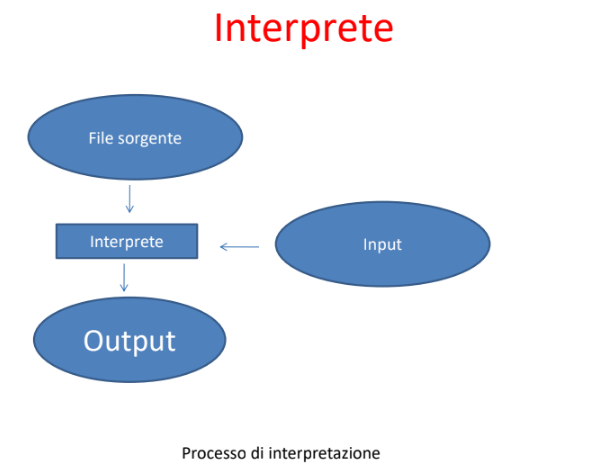

Traduttori: Interpreti e Compilatori
Perché occorrono i traduttori
L’utilizzo dei linguaggi ad alto livello introduce un
livello di astrazione tale da consentire al
programmatore di concentrarsi sul problema da
risolvere senza preoccuparsi più di tanto dei
dettagli implementativi a livello hardware.
Questo ha imposto la creazione di programmi
traduttori, dei particolari software con il compito
di trasformare le direttive di alto livello in
linguaggio macchina, che è l’unico compresibile
dal calcolatore.
Codice sorgente, codice eseguibile
Il codice sorgente è un programma scritto in
linguaggio di programmazione. Esso non è
direttamente comprensibile dal calcolatore.
Il codice eseguibile, non è altro che la
traduzione del sorgente in linguaggio
macchina, strettamente legato alla
piattaforma hardware del calcolatore e del
sistema operativo in esecuzione su esso.
Traduttore
Il traduttore trasforma quindi il codice sorgente
in codice eseguibile.
Esistono due tipi di traduttore: compilatori ed
interpreti.
Compilatore
Il compilatore prende il codice sorgente, nel quale
vengono indicate le istruzioni, e lo traduce tutto
in una volta in linguaggio macchina, producendo
un file eseguibile.
Opera come segue:
1. Legge le istruzioni del programma sorgente, ne
verifica la correttezza sintattica e lo traduce in
linguaggio macchina
2. Memorizza su disco il programma eseguibile
tradotto in linguaggio macchina, pronto per
essere eseguito in blocco

Interprete

Linguaggi interpretati e linguaggi
compilati
In base al tipo di traduttore utilizzato, distinguiamo
tra linguaggi di programmazione interpretati e
compilati.
Esempi di linguaggi compilati sono: C, C++, Pascal,
ecc..
Esempi di linguaggi interpretati sono: HTML, PHP,
Javascript, ecc..
Esempi di linguaggi ibridi (cioè interpretati, ma solo
dopo una fase di compilazione) sono: Java, Visual
Basic, ecc..